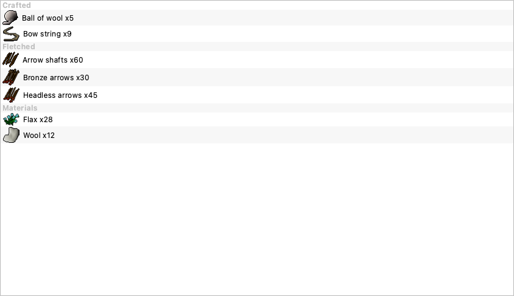

You called it: the runtime "rendering math" was the wrong layer. Padding is now trimmed into the PNG once, so the UI just does QIcon(path) like it always did. And switching activity in the menu now updates the reviewer immediately.
Small wiki sprites ship as art centered in a transparent 64×64 box, so they looked tiny in the icon slot. Instead of cropping every paint, a build-time pass trims each small sprite to its opaque box. Plain QIcon(path) from then on — no scan, no cache, no size-gate, no beachball.
Picking a new activity (e.g. Gather flax → Make soft clay) only saved config; the in-review HUD kept showing the old one until the next card. Now any target change pushes straight to the HUD.
Re: gather/process targets — they go through the same _set_value path, so they're now consistent too. The HUD intentionally shows level/XP progress (not the ore/tree name) for XP skills, so a target swap there is a no-op on screen by design; Utility is the only one whose HUD text is the activity, which is exactly the case you hit.

tools/trim_icons.py alpha-trims small (≤256px) padded sprites in place, skips the big full-frame photos, idempotent, Pillow-or-QImage backend. Ran it: 26 trimmed, large crafted photos untouched.icon_filled_to_box, scaled_item_icon, the cache + size-gate. All four call sites (craft / fletch / utility / bank) revert to QIcon(path)._set_value now calls update_review_hud after persisting, so activity/target changes hit the reviewer right away.techContext.md + fetch_assets.py updated: the runtime-crop experiment is documented as reverted; preprocessing (scrape-time trim + trim_icons.py) is the convention.+28 Flax ghost indicator for no-XP activities. Tests: the old "runtime-crop" assertion was rewritten to assert the asset is pre-trimmed on disk, plus a new integration test that a target change calls update_review_hud.